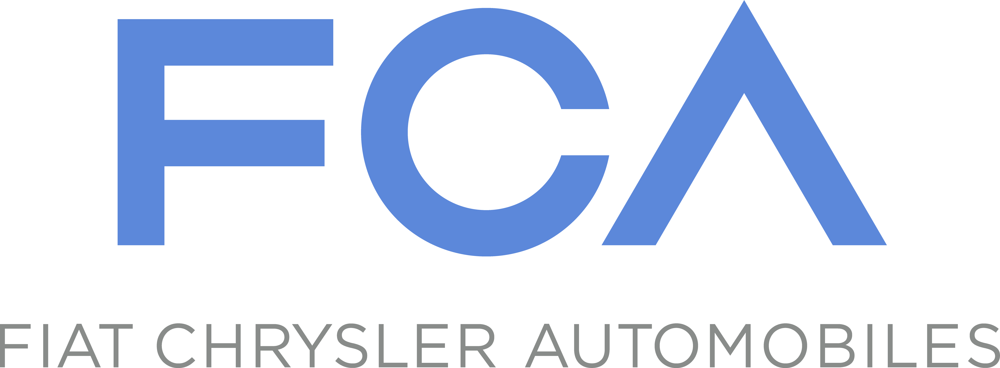

Jacob Wilson is a proven security leader and hands-on product security expert with deep experience securing software supply chains, embedded platforms, and cloud-native systems at scale. He brings 17 years of IT experience and 13 years in cybersecurity, combining technical execution with organizational influence. His background includes impactful roles as Chief Security Officer, Security Director, Principal Consultant, and Speaker.
He has worked across Financial Services, Application Security Consulting, Open Source Development, Automotive Manufacturers, Government, and ISP/MSPs. Jacob has led and grown security teams while directly contributing to secure development—building and embedding controls into Capability Maturity Models, Competency Development Frameworks, Regulatory Compliance, IT Governance, Financial Forecasting, and GTM Requirements.
Throughout his career, he’s addressed complex challenges across cloud-native software, APIs, and embedded security through roles in Software Consulting, Product Development Engineering, Security Incident Response, and Threat Intelligence. His experience spans software stacks and embedded products, as well as the manufacturing and enterprise systems that support them. He’s played a key role securing the software supply chains of major cryptocurrency exchanges and automotive manufacturers—driving strategy and execution, and applying risk-based discipline to cybersecurity and EUC operations.
Strategist
Built and led security teams that thrive in ambiguity, balancing vision with hands-on engineering impact. Grounded in trust, curiosity, and shared responsibility.
Builder
Architected secure systems across cloud, embedded, and distributed platforms. Comfortable translating business risk into developer-practical security strategy.
Advocate
Mentors across roles and disciplines, building environments where security talent grows with the mission. Champions frameworks that reward impact, not just titles.
Speaker
Translates security into language that resonates from boardrooms to build pipelines. Known for clear, direct communication on technical risk and real-world tradeoffs.
Professional Experience
$ history | grep work
SEPTEMBER 2025 - PRESENT
Comerica Bank
VP Network Security Engineering Manager
Lead a team of engineers accountable for network security defense technologies, including Secure Service Edge (SSE), Zero Trust Network Access (ZTNA), Web Application Firewalls (WAF), DDoS mitigation, and Data Loss Prevention (DLP) strategies.
Responsible for security network engineering strategy, architectural guidance, and participation in both Change Advisory Board and Architecture Review processes.
Manage annual budgets, platform licensing costs, and vendor relationships to ensure efficient tool spend and lifecycle planning.
Drive both security and operational incident response outcomes across supported network security platforms, ensuring findings are remediated and aligned with risk priorities.
Develop staff through coaching, targeted skill planning, and structured ownership of complex engineering responsibilities.
JULY 2025 - PRESENT
Cyber Canon
IT Director
Serve as volunteer IT Director supporting Cyber Canon’s collaboration systems and core infrastructure.
Manage user onboarding, access provisioning, and lifecycle maintenance across shared platforms.
Maintain productivity tools, shared workspaces, and content systems used by the Cyber Canon product team.
Support technology planning and system improvements that enhance reliability and team coordination.
APRIL 2022 - APRIL 2025
Gemini Moonbase
Chief Security Officer
Responsible for aligning security programs with business growth, regulatory expectations, and long-term operational readiness. This includes guiding cybersecurity initiatives, supporting licensing efforts across multiple jurisdictions, and ensuring third-party partnerships meet high security and compliance standards.
Gemini Software Services
Principal Security Technical Program Manager
Responsible for the design and successful implementation of a comprehensive Data Governance Program, overseeing data integrity, security, and compliance across the organization.
Gemini Trust Company
Associate Director of Governance Risk and Compliance
Managed a team of GRC employees responsible for security standards, training and awareness, third party risk, vendor risk, contract reviews, entitlement reviews, control frameworks, internal and external audit, regulatory compliance, and ISO PCI and NYDFS certifications.
Oversee the implementation of comprehensive security policies, procedures, and guidelines, incorporating NIST SP 800-53 controls and CIS Critical Security Controls. Oversee the management of Security Risk Assessment, Control Library, and associated work products.
Associate Director of Application Security
Established a client security advisory practice enabling our customers to better understand and protect software interfacing with the exchange.
Designed, implemented, and evolved a risk framework for clients to ensure the security of third parties interacting with the Gemini trading platform and APIs.
JULY 2019 - APRIL 2022
Synopsys
Associate Principal Consultant
Responsible for Open Source consulting offerings including: Open Source Maturity Planning, Securing Open Source instructor led training, and ISO5230 compliance certification.
Senior Consultant
Responsible for client management of the North American Automotive vertical: job profitability analysis, work breakdown structures, resource forecasting, RFP responses, and client delivery.
Technical embedded expertise: IoT Penetration Testing, Architectural Risk Assessments, Threat Modeling, Vulnerability Assessments, Web Application and Network Penetration Tests.
SEPTEMBER 2018 - JULY 2019

Fiat Chrysler Automobiles
Cyber Security - Design Responsible for UConnect Systems
Design Responsible for leading the Cyber Security work streams on UConnect infotainment products.
Responsible for establishing security roll out plans, validation of security requirements, penetration testing, and delivery of security KPIs.
Managed multiple radio suppliers, third-party security testing vendors, and program managers to ensure work is accomplished on time, to a high quality.
AUGUST 2011 - SEPTEMBER 2018
Ford Motor Company
Connected Vehicle Security - Red Team Lead
Managed scoping, proposal selection, and delivery of global security penetration testing in 2018.
Extensive experience with vendor relationship management, RFQs and SOWs including negotiation.
Responsible for Red Team competency development framework and training plan.
Specialization in building product security teams focused on Embedded Systems and Bluetooth Low Energy BLE.
SANS SEC564 Red Team Ops, Metasploit Certified Specialist, Nexpose Certified Administrator.
Cyber Security - Threat Intelligence Lead
Led the global implementation of our corporate Threat Intelligence Platform (TIP) and integrations with corporate Governance Risk and Compliance Platform (GRC).
Led a global team of analysts, establishing procedures and metrics to gather, maintain, and correlate strategic and tactical threat intelligence.
Developed annual threat report, quarterly executive intelligence briefings, tactical briefings, and internal training material.
Multiple external presentations as threat intelligence SME.
Maintain customer relationship with Internal/External Auditors, Application Development, Application Management, and Remote Site teams.
Identify control gaps, assess risk, championing security awareness and policy compliance..
Network Engineer
Firewall, Load Balancer, Content Filtering, Intrusion Prevention/Detection Systems
Remote IT Site Analyst
Maintenance and troubleshooting all of Ford's multi-site video conferences on an international scale.
MAY 2011 - AUGUST 2011
Los Alamos National Laboratory
Application Developer
Developed the Module Display web interface utilizing BASH, TCSH, PHP, MySQL, built on the CAKE PHP framework. The interface identifies inconsistencies across clusters within classified and unclassified networks, and incorporates multi-factor authentication.
SEPTEMBER 2009 - MAY 2011
REMC1
IT Site Management
Duties of the REMC1 SupportNet team include providing IT and technical support to local school districts, managing internet access, maintaining technology infrastructure, troubleshooting technical issues, and integration of technology.
JUNE 2007 - MAY 2011
Pathfinder Networks
Network Technician
Provided comprehensive network management services, including Windows server/workstation configuration, router/firewall administration, data backup, and disaster recovery, virus/malware prevention, laptop repairs, and hardware sales.
Education
$ cat /etc/*-release
University of Michigan-Dearborn
Master of Business Administration concentration in Information Systems Management
JANUARY 2014 - DECEMBER 2017
Michigan Technological University
Bachelor of Science in Computer Networking System Administration
AUGUST 2008 - MAY 2012
Achievements and Awards
$ openssl x509 -in certfile.pem
Below are a list of honors and awards both given and received from professional societies and associations, including formal publication of papers and patents.
Professional Associations
Society of Automotive Engineers (2021)
Infragard Michigan Alliance (2015)
Epsilon Pi Tau - Delta Zeta Chapter - International Honor Society for Technology Professionals (2012)
Association of Information Technology Professionals (2010)
Scholarships and Awards
Berrien Community Foundation - Scholarship Endowment (2022)
Michigan Gateway Community Foundation - Scholarship Recipient (2011)
Dr James A Black - Scholarship Recipient (2011)
George Robbe Memorial - Scholarship Recipient (2011)
Patents and Publications
Wilson, J., Nassery K. (2021). A method or process to determine a weighted measurement of capability impact U.S. Provisional Patent [US 63/209,255]